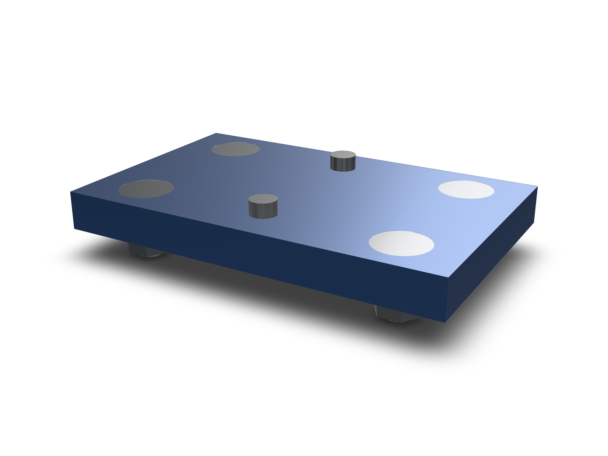
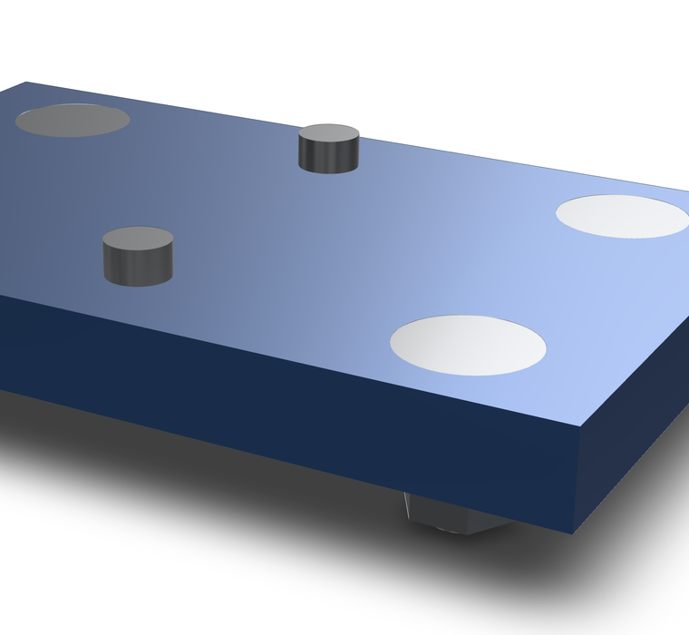
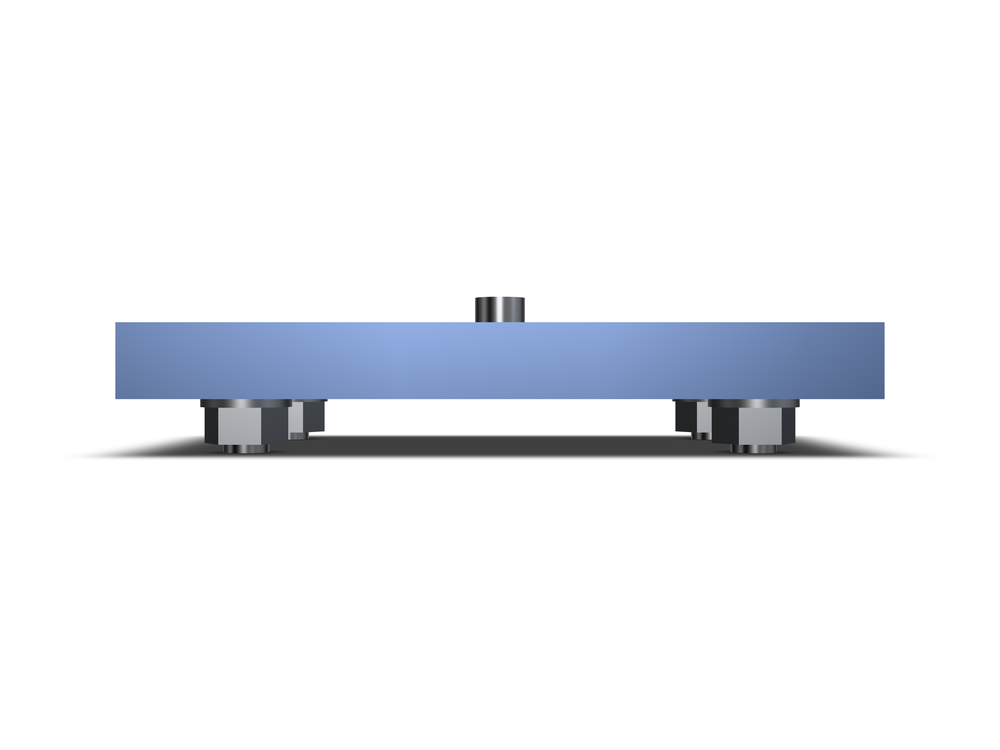

Blog · · Andrii Shylenko
Fasten a part from its holes with lib.insert
lib.insert(shape, request) works from the holes a part already has. It sizes the thread from the bore diameter, covers every similar hole, and cuts the seat the fastener family needs. No hole feature id and no face frame is required: any bore in the lowered model behaves the same, whether it came from hole(), holes(), a pattern or an import.
examples/parts/hole-driven-insert.kcad.ts. Drag to turn it.What the holes decide
- Size. The bore diameter is matched against ISO 273 normal clearance: Ø2.4 for M2, Ø2.9 for M2.5, Ø3.4 for M3, Ø4.5 for M4, Ø5.5 for M5, Ø6.6 for M6. A bore that matches none of them is refused with the diameters the shape actually has.
- Similar holes. Every bore with the same diameter and a parallel axis is covered, so a patterned hole comes along without naming the pattern.
nearseeds from the nearest bore;diameterMmselects across the shape. - Seat. A flat head cuts a 90° countersink to the head diameter; cap heads cut nothing unless
seat: 'counterbore'is asked for;seat: 'none'leaves the hole alone. - Mode.
bolt(the default) adds a washer under the head and a washer plus hex nut on the back and needs a through bore.screwplaces the screw alone and, in a blind hole, picks the longest stocked length that still fits.
const plate = box(40, 40, 8, true)
.holes('top', {
positions: [{ u: -10, v: 0 }, { u: 10, v: 0 }],
diameter: 5.5,
depth: 'through',
});
const fitted = await lib.insert(plate, {
diameterMm: 5.5,
family: 'flat-head-countersunk',
mode: 'bolt',
});
return fitted.shape;A pattern is just similar holes: pattern the part and every instance is covered, because the selection is diameter and axis, not feature identity.
const patterned = box(20, 10, 6, true)
.hole('top', { u: 0, v: 0, diameter: 3.4, depth: 'through' })
.patternLinear({ count: 3, direction: [1, 0, 0], spacing: 15 });
const fitted = await lib.insert(patterned, {
near: [0, 0, 3],
family: 'socket-head-cap-screw',
mode: 'screw',
});
return fitted.shape;

The committed example's second call is the same shape of request:
const countersunk = await lib.insert(plate, {
diameterMm: 5.5,
family: 'flat-head-countersunk',
mode: 'bolt',
gripMm: 8,
});Placement and what comes back
lib.insert returns { shape, holes }. shape is the input with the seats cut (the same shape when nothing was cut). Each entry in holes carries the head-side mouth center and the direction into the material, the resolved thread and screw length, and the placed members: screw, plus headWasher, tailWasher and nut in bolt mode. The members are oriented along the detected axis, so they drop straight into an assembly.

Two bores get a second look. A bore that sits exactly on a larger thread's tap drill (ISO 2306: Ø2.5 for M3, Ø3.3 for M4, Ø4.2 for M5, Ø5.0 for M6, Ø6.8 for M8) comes back as pilotFor, because a tapped pilot and a clearance bore cannot be told apart from geometry alone. And a coaxial larger bore already reaching the mouth (a counterbore) is reported as existingSeatMm; seat: 'auto' then leaves the hole alone rather than cutting a second seat into it.
Limits
The members are the library's envelope solids: heads and shanks, no helical thread. The seat cut is a boolean, so it does not become a hole feature that drawings or DFM checks classify. Nothing here proves thread contact, engagement, strength, torque or preload, and a tapped hole is not classified as a thread.
Reproduce
In a repository checkout with dependencies installed:
npx tsx examples/parts/verify-insert.mts
npx tsx src/agent/cli/index.ts evaluate examples/parts/hole-driven-insert.kcad.tsThe example evaluates to 38 features with 0 diagnostics; the verifier rewrites docs/demos/hole-driven-insert/geometry-evidence.json with the part bounds, the countersink volume removed and 105 interference-free part pairs.